이 전략의 진입 조건
- SMA 정배열 성립 — 20일선 > 50일선 > 120일선 순서가 오늘 성립할 것
- 정배열이 최근에 시작 — 그 정배열이 시작된 지 10거래일 이내일 것 (이미 오래 정배열이던 종목은 제외 — '막 시작한 것'만 잡습니다)
자세히 — 한계와 주의사항
이 두 조건이 게이트 전부입니다. 나머지(거래량·모멘텀)는 순위를 매기는 점수일 뿐 통과 여부를 가르지 않습니다.
점수 = 신선도 + 거래량배수 + 모멘텀
· 신선도: 정배열이 시작된 지 얼마나 됐는지 (오늘 막 시작 = 1.0)
· 거래량배수: 오늘 거래량 ÷ 최근 평균 거래량 (최대 3배)
· 모멘텀: 정배열 시작일 종가 대비 오늘 종가 상승률 ÷ 10 (하락 중이면 0)
52주 신고가 스캐너와 목적이 반대입니다 — 그쪽은 이미 오래 오른 리더주를 계속 잡고, 이쪽은 이제 막 추세가 만들어진 종목만 잡습니다.
백테스트 파라미터(손절 −8%, 익절 +24% 등)는 52주 신고가 스캐너에서 그대로 가져온 값이고 Launch Pad 자체 데이터로 재튜닝한 적이 없습니다.
롯데손해보험 (000400)
15일전 포착
KOSPI
보험업
업종 참고: RS 평균 77/99(업종 중 상위 2%) · 오늘 신호 1건 · 업종 평균이 코스피 대비 +5.8%p(126일), 종목별 편차 ±18%p
🧪 자체 섹터 분류(실험적, 참고용): 보험업 (롯데손해보험·미래에셋생명 등 6종목)
섹터 내 RS 순위: 1/6위 (RS 92/99)
섹터 1~3위: 롯데손해보험(92), 미래에셋생명(80), 한화생명(77)
※ 자체 상관관계 계산(최근 1년) — 검증 시 기준업종 11개 중 8개 정확. 주 단위로 구성종목이 일부 바뀔 수 있음(주간 일치도 실측 0.53)
종가 2,650 · 거래대금 240억
정배열 1일차거래량비 7.7x정배열 후 +0.0%
손절 2,438 | 목표 3,286 | 수량 3,773주
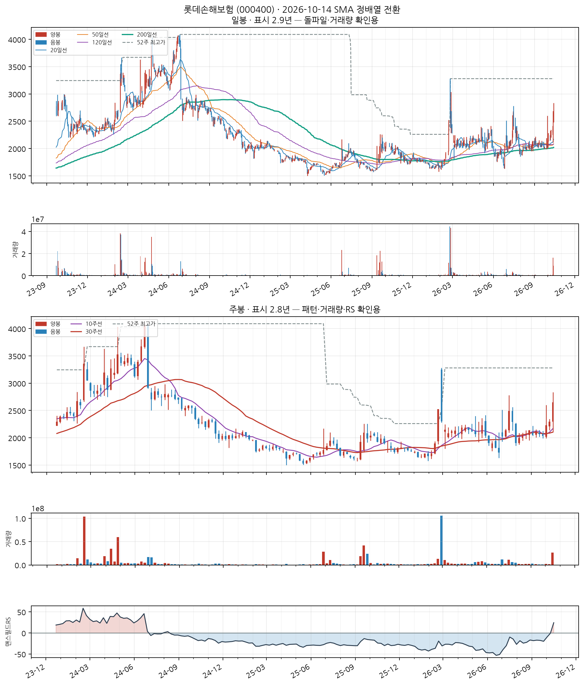
📐 차트 패턴: 약한 유사 — 이중바닥 형태 완성·미돌파 확신 낮음 판정 기준(PDF)
W 형태는 있으나 중간 고점 2,490를 아직 넘지 못했다.
가장 강한 반증 선행 추세: 선행 추세가 상승(+53.9%) — 상승 중 눌림일 수 있어 반전형 전제가 없다
경쟁 후보·더 단순한 설명 더 단순한 설명: 선행 하락이 없어 반전형이 아니라 상승 추세 중 눌림(조정)일 수 있다
측정표 (주봉 종가 기준, 판정일 2026-10-14 이후 데이터 미사용)
조건별 판정
- 미충족 선행 추세 — 선행 추세가 상승(+53.9%) — 상승 중 눌림일 수 있어 반전형 전제가 없다
- 부분충족 두 저점 일치 — 저점 차이 9.1% — 6% 초과
- 부분충족 중간 반등 — 중간 반등 44.0% — 30%를 넘어 W가 아니라 독립된 두 파동일 수 있음
- 충족 기간 — 베이스 33주 ≥ 7주
- 충족 깊이 — 베이스 깊이 31.5% ≤ 40%
- 충족 저점2 매도 약화 — 저점2 부근 거래량 = 저점1 부근의 0.82배
- 충족 최근성 — 마지막 구조 피벗(2026-07-31)이 10주 전
- 미충족 넥라인 돌파 — 종가가 아직 확인선 위로 안 올라옴(-7.8%)
- 판정불가 돌파 거래량 — 돌파 전
추가로 필요한 데이터 장중 고저 기준 깊이(여기 수치는 주봉 종가 기준) · 이번 주 완결 주봉(2026-10-16 라벨) — 미완결이라 판정에서 제외
패턴만으로 매수 추천이나 목표 달성 확률을 만들지 않습니다. 수치 기준은 잠정치이며 라벨 데이터로 검증되지 않았습니다.
CC — 분기 실적 성장 우수
2026 반기보고서(누적) · 순이익 흑자전환(+nan억원→+13억원) · EPS 흑자전환(+nan원→+4.0원) · 매출 흑자전환(+nan억원→+2,243억원)
DART 공시 기준 · 분기 단독 전년동기 대비 · 직전 분기보다 성장률이 높아짐(가속)
AA — 연간 실적 성장 미흡
2025 사업보고서(연간) · 순이익 +111.9% · EPS +132.4% · 매출 -12.3%
DART 공시 기준 · 연간 전년동기 대비 · 최근 3년 연속 증가는 아님 — 오닐 A 기준 미충족으로 한 단계 낮춤
NN — 신고가·모멘텀 데이터 없음
신고가 데이터 없음
SS — 수급(거래량) 우수
20일 평균 대비 7.71배
유통주식수·순매수 데이터는 미보유 (거래량으로만 근사)
LL — 주도주(상대강도) 우수
RS 등급 92/99 (126거래일 ≈ 6개월 기준 · 유니버스 1000종목 중 백분위) · 지수대비 +24.4%p
상위 시가총액 유니버스 기준 — KRX 전체 대비 백분위 아님 · 오닐의 RS Rating은 52주 기준이지만 여기는 126거래일로, 같은 리포트의 6개월 모멘텀과 기간을 맞춘 값이다(원전과 다름)
II — 기관·외국인 수급 우수
20일 순매수 +7.52% (거래대금 대비) · 최근절반 +7.97% vs 이전절반 +0.26% (개선) · 순매수 11일 · 누적 +59.0억원
**오닐의 I(기관 보유 종목 수의 증가)가 아니라 단기 순매수 흐름**을 쓴 대용값이다 — 보유 기관 수는 국내에 공개 데이터가 없다 · 한국투자증권 공식 API(KIS) 기준 · 기관+외국인 합산, 기타법인 제외로 거래대금은 소폭 과소추정 · 임계값은 아직 실측 검증 전 잠정치 — 수급 이력이 쌓이면 다른 지표와 같은 방식으로 구분력을 측정해 조정 예정
MM — 시장방향 미흡
KOSPI 지수가 60일선 아래
**오닐의 M(분산일·추종일 계수)이 아니라 지수의 이동평균 상회 여부**를 쓴 대용값이다 · 실제 매매 필터로는 미적용(표시 전용) — 종목 선별보다 지수 자체 타이밍이 더 효율적이라는 자체 검증 결과 있음 (reports/vs_kospi.md)
한국공항 (005430)
7일전 포착
KOSPI
기타 운송관련 서비스업
업종 참고: RS 평균 데이터 부족 · 오늘 신호 1건
🧪 자체 섹터 분류(실험적, 참고용): 의약품 제조업 (한국공항·나이스정보통신 등 6종목)
섹터 내 RS 순위: 1/6위 (RS 96/99)
섹터 1~3위: 한국공항(96), 나이스정보통신(89), 삼진제약(83)
※ 자체 상관관계 계산(최근 1년) — 검증 시 기준업종 11개 중 8개 정확. 주 단위로 구성종목이 일부 바뀔 수 있음(주간 일치도 실측 0.53)
종가 92,500 · 거래대금 5.7억
정배열 5일차거래량비 1.0x정배열 후 -2.8%
손절 85,100 | 목표 114,700 | 수량 108주
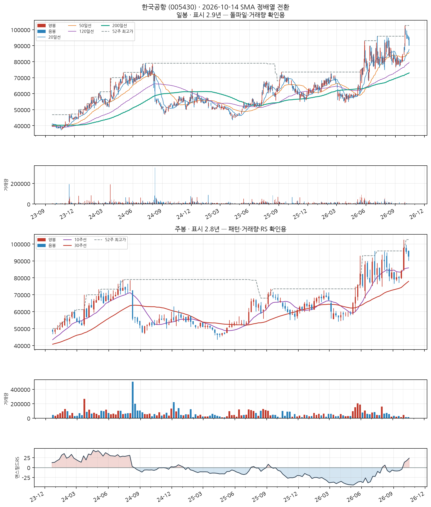
📐 차트 패턴: 약한 유사 — 이중바닥 돌파 확인 확신 낮음 판정 기준(PDF)
두 저점(79,000/79,000) 뒤 중간 고점 90,700를 종가로 넘었다.
가장 강한 반증 선행 추세: 선행 추세가 상승(+43.2%) — 상승 중 눌림일 수 있어 반전형 전제가 없다
경쟁 후보·더 단순한 설명 더 단순한 설명: 선행 하락이 없어 반전형이 아니라 상승 추세 중 눌림(조정)일 수 있다
측정표 (주봉 종가 기준, 판정일 2026-10-14 이후 데이터 미사용)
조건별 판정
- 미충족 선행 추세 — 선행 추세가 상승(+43.2%) — 상승 중 눌림일 수 있어 반전형 전제가 없다
- 충족 두 저점 일치 — 저점 차이 0.0% ≤ 6%
- 충족 중간 반등 — 중간 반등 14.8% ≥ 8%
- 충족 기간 — 베이스 17주 ≥ 7주
- 충족 깊이 — 베이스 깊이 10.1% ≤ 40%
- 충족 저점2 매도 약화 — 저점2 부근 거래량 = 저점1 부근의 0.30배
- 충족 최근성 — 돌파 주(2026-10-02)가 1주 전
- 충족 넥라인 돌파 — 2026-10-02 주 종가 97,700 > 확인선 — 돌파 후 1주 경과
- 미충족 돌파 거래량 — 돌파 주 거래량 = 직전 10주 평균의 0.90배 (기준 1.4배)
추가로 필요한 데이터 장중 고저 기준 깊이(여기 수치는 주봉 종가 기준) · 이번 주 완결 주봉(2026-10-16 라벨) — 미완결이라 판정에서 제외
패턴만으로 매수 추천이나 목표 달성 확률을 만들지 않습니다. 수치 기준은 잠정치이며 라벨 데이터로 검증되지 않았습니다.
CC — 분기 실적 성장 양호
2026 반기보고서(누적) · 순이익 흑자전환(+nan억원→+103억원) · EPS 흑자전환(+nan원→+3,379원) · 매출 흑자전환(+nan억원→+29억원)
DART 공시 기준 · 분기 단독 전년동기 대비 · 직전 분기보다 성장률이 낮아짐(감속) — 오닐 C 기준으로 한 단계 낮춤
AA — 연간 실적 성장 미흡
2025 사업보고서(연간) · 순이익 -0.1% · EPS -0.2% · 매출 +5.9%
DART 공시 기준 · 연간 전년동기 대비 · 최근 3년 연속 증가는 아님 — 오닐 A 기준 미충족으로 한 단계 낮춤
NN — 신고가·모멘텀 데이터 없음
신고가 데이터 없음
SS — 수급(거래량) 양호
20일 평균 대비 1.05배
유통주식수·순매수 데이터는 미보유 (거래량으로만 근사)
LL — 주도주(상대강도) 우수
RS 등급 96/99 (126거래일 ≈ 6개월 기준 · 유니버스 1000종목 중 백분위) · 지수대비 +60.9%p
상위 시가총액 유니버스 기준 — KRX 전체 대비 백분위 아님 · 오닐의 RS Rating은 52주 기준이지만 여기는 126거래일로, 같은 리포트의 6개월 모멘텀과 기간을 맞춘 값이다(원전과 다름)
II — 기관·외국인 수급 우수
20일 순매수 +20.30% (거래대금 대비) · 최근절반 +20.50% vs 이전절반 +20.00% (개선) · 순매수 16일 · 누적 +21.3억원
**오닐의 I(기관 보유 종목 수의 증가)가 아니라 단기 순매수 흐름**을 쓴 대용값이다 — 보유 기관 수는 국내에 공개 데이터가 없다 · 한국투자증권 공식 API(KIS) 기준 · 기관+외국인 합산, 기타법인 제외로 거래대금은 소폭 과소추정 · 임계값은 아직 실측 검증 전 잠정치 — 수급 이력이 쌓이면 다른 지표와 같은 방식으로 구분력을 측정해 조정 예정
MM — 시장방향 미흡
KOSPI 지수가 60일선 아래
**오닐의 M(분산일·추종일 계수)이 아니라 지수의 이동평균 상회 여부**를 쓴 대용값이다 · 실제 매매 필터로는 미적용(표시 전용) — 종목 선별보다 지수 자체 타이밍이 더 효율적이라는 자체 검증 결과 있음 (reports/vs_kospi.md)
1차 비철금속 제조업
업종 참고: RS 평균 43/99(업종 중 상위 71%) · 오늘 신호 1건 · 업종 평균이 코스피 대비 -9.8%p(126일), 종목별 편차 ±47%p
🧪 자체 섹터 분류(실험적, 참고용): 삼아알미늄·롯데에너지머티리얼즈 등 13종목 (업종 혼재)
섹터 내 RS 순위: 1/13위 (RS 93/99)
섹터 1~3위: 삼아알미늄(93), 롯데에너지머티리얼즈(84), 상신이디피(76)
※ 자체 상관관계 계산(최근 1년) — 검증 시 기준업종 11개 중 8개 정확. 주 단위로 구성종목이 일부 바뀔 수 있음(주간 일치도 실측 0.53)
종가 72,200 · 거래대금 244억
정배열 1일차거래량비 1.8x정배열 후 +0.0%
손절 66,424 | 목표 89,528 | 수량 138주
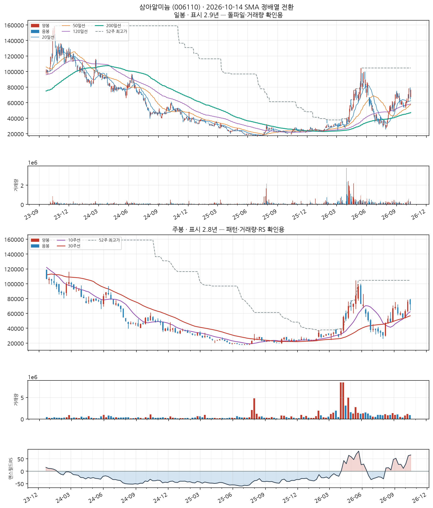
📐 차트 패턴 판정: 후보 없음 후보 없음 판정 기준(PDF)
세 패턴 모두 필수 조건을 채운 후보가 없다(가장 가까운 컵위드핸들 후보: 구조 독립성: 부모 컵(오른쪽 림 2026-09-04)의 핸들 하락(저점 2026-09-23)을 새 컵의 왼쪽 절반으로 재분할한 후보 — 자체 핸들이 아직 없다, 독립된 새 구조의 증거가 없다).
가장 강한 반증 컵위드핸들: 구조 독립성: 부모 컵(오른쪽 림 2026-09-04)의 핸들 하락(저점 2026-09-23)을 새 컵의 왼쪽 절반으로 재분할한 후보 — 자체 핸들이 아직 없다, 독립된 새 구조의 증거가 없다; 역헤드앤숄더: 어깨 대칭: 어깨 높이차 28.7% — 과도(25% 초과); 이중바닥: 두 저점 일치: 저점 차이 43.7% — 같은 지지대로 보기 어려움(10% 초과)
경쟁 후보·더 단순한 설명 더 단순한 설명: 최근 26주 상승 추세 지속(+37.3%) — 베이스 없음
추가로 필요한 데이터 장중 고저 기준 깊이(여기 수치는 주봉 종가 기준) · 이번 주 완결 주봉(2026-10-16 라벨) — 미완결이라 판정에서 제외
패턴만으로 매수 추천이나 목표 달성 확률을 만들지 않습니다. 수치 기준은 잠정치이며 라벨 데이터로 검증되지 않았습니다.
CC — 분기 실적 성장 우수
2026 반기보고서(누적) · 순이익 흑자전환(+nan억원→+2.6억원) · 매출 흑자전환(+nan억원→+969억원)
DART 공시 기준 · 분기 단독 전년동기 대비 · 직전 분기보다 성장률이 높아짐(가속) · EPS 데이터가 없어 순이익·매출로만 판정 — 자사주 매입 착시를 거르지 못함
AA — 연간 실적 성장 미흡
2025 사업보고서(연간) · 순이익 적자확대(-94억원→-249억원) · EPS 적자확대(-636원→-1,692원) · 매출 +7.8%
DART 공시 기준 · 연간 전년동기 대비 · 최근 3년 연속 증가는 아님 — 오닐 A 기준 미충족으로 한 단계 낮춤
NN — 신고가·모멘텀 데이터 없음
신고가 데이터 없음
SS — 수급(거래량) 우수
20일 평균 대비 1.78배
유통주식수·순매수 데이터는 미보유 (거래량으로만 근사)
LL — 주도주(상대강도) 우수
RS 등급 93/99 (126거래일 ≈ 6개월 기준 · 유니버스 1000종목 중 백분위) · 지수대비 +29.7%p
상위 시가총액 유니버스 기준 — KRX 전체 대비 백분위 아님 · 오닐의 RS Rating은 52주 기준이지만 여기는 126거래일로, 같은 리포트의 6개월 모멘텀과 기간을 맞춘 값이다(원전과 다름)
II — 기관·외국인 수급 양호
20일 순매수 +5.98% (거래대금 대비) · 최근절반 +5.78% vs 이전절반 +6.51% (약화) · 순매수 10일 · 누적 +150.7억원
**오닐의 I(기관 보유 종목 수의 증가)가 아니라 단기 순매수 흐름**을 쓴 대용값이다 — 보유 기관 수는 국내에 공개 데이터가 없다 · 한국투자증권 공식 API(KIS) 기준 · 기관+외국인 합산, 기타법인 제외로 거래대금은 소폭 과소추정 · 임계값은 아직 실측 검증 전 잠정치 — 수급 이력이 쌓이면 다른 지표와 같은 방식으로 구분력을 측정해 조정 예정 · 최근 유입이 이전보다 약해져 한 단계 낮춤
MM — 시장방향 미흡
KOSPI 지수가 60일선 아래
**오닐의 M(분산일·추종일 계수)이 아니라 지수의 이동평균 상회 여부**를 쓴 대용값이다 · 실제 매매 필터로는 미적용(표시 전용) — 종목 선별보다 지수 자체 타이밍이 더 효율적이라는 자체 검증 결과 있음 (reports/vs_kospi.md)
자동차 신품 부품 제조업
업종 참고: RS 평균 49/99(업종 중 상위 60%) · 오늘 신호 3건 · 업종 평균이 코스피 대비 -19.7%p(126일), 종목별 편차 ±17%p
🧪 자체 섹터 분류(실험적, 참고용): 에스엠벡셀·비아트론 등 12종목 (업종 혼재)
섹터 내 RS 순위: 1/12위 (RS 93/99)
섹터 1~3위: 에스엠벡셀(93), 비아트론(92), 옵티코어(80)
※ 자체 상관관계 계산(최근 1년) — 검증 시 기준업종 11개 중 8개 정확. 주 단위로 구성종목이 일부 바뀔 수 있음(주간 일치도 실측 0.53)
종가 2,670 · 거래대금 401억
정배열 2일차거래량비 3.9x정배열 후 +29.0%
손절 2,456 | 목표 3,311 | 수량 3,745주
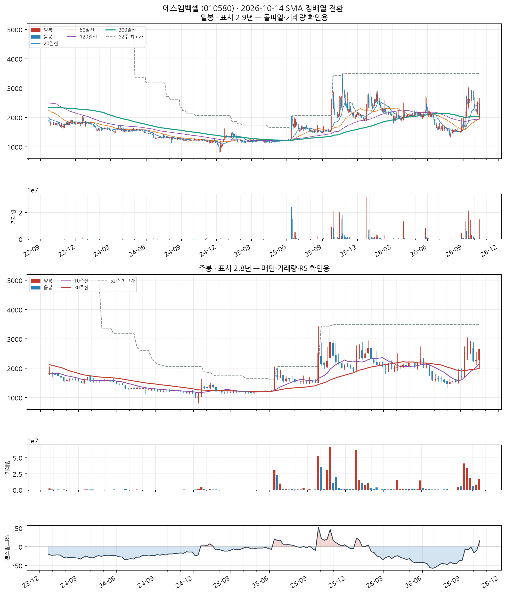
📐 차트 패턴: 약한 유사 — 컵위드핸들 형태 완성·미돌파 확신 낮음 판정 기준(PDF)
컵(17주·깊이 46.1%)+핸들 형태는 있으나 피벗 2,710를 아직 넘지 못했다.
가장 강한 반증 베이스 거래량 수축: 컵 구간 평균 = 직전 17주 평균의 3.27배
경쟁 후보·더 단순한 설명 더 단순한 설명: 깊이 조건이 약해 단순 횡보·박스로 볼 여지가 있다(컵 깊이 46.1% — 기준 12%~33% 밖(고변동 종목이라 50%까지 예외 허용))
측정표 (주봉 종가 기준, 판정일 2026-10-14 이후 데이터 미사용)
조건별 판정
- 부분충족 선행 추세 — 선행 상승 +9.5% — +20%에 못 미침
- 충족 기간 — 컵 17주 (기준 7~65주)
- 부분충족 깊이 — 컵 깊이 46.1% — 기준 12%~33% 밖(고변동 종목이라 50%까지 예외 허용)
- 부분충족 림 대칭 — 좌우 림 차이 14.8% — 12% 초과
- 충족 U자 모양 — 바닥 형태(3주 중앙값 평활): 직선 V 템플릿 오차 0.237 vs 포물선 U 템플릿 오차 0.122 → 치우침 +0.115 (V=−0.167·U=+0.167, 기각 ≤-0.05·충족 ≥+0.05) · 바닥 중심 위치 47%
- 미충족 베이스 거래량 수축 — 컵 구간 평균 = 직전 17주 평균의 3.27배
- 부분충족 핸들 — 핸들 1주·깊이 17.3% — 15% 또는 컵 깊이 절반(23.0%) 초과
- 부분충족 핸들 거래량 수축 — 핸들 평균 = 컵 구간 평균의 1.75배
- 충족 최근성 — 마지막 구조 피벗(2026-10-02)이 1주 전
- 미충족 피벗 돌파 — 종가가 아직 확인선 위로 안 올라옴(-16.2%)
- 판정불가 돌파 거래량 — 돌파 전
추가로 필요한 데이터 장중 고저 기준 깊이(여기 수치는 주봉 종가 기준) · 이번 주 완결 주봉(2026-10-16 라벨) — 미완결이라 판정에서 제외
패턴만으로 매수 추천이나 목표 달성 확률을 만들지 않습니다. 수치 기준은 잠정치이며 라벨 데이터로 검증되지 않았습니다.
CC — 분기 실적 성장 미흡
2026 반기보고서(누적) · 순이익 적자확대(+nan억원→-9.5억원) · 매출 흑자전환(+nan억원→+361억원)
DART 공시 기준 · 분기 단독 전년동기 대비 · 직전 분기보다 성장률이 낮아짐(감속) — 오닐 C 기준으로 한 단계 낮춤 · EPS 데이터가 없어 순이익·매출로만 판정 — 자사주 매입 착시를 거르지 못함
AA — 연간 실적 성장 미흡
2025 사업보고서(연간) · 순이익 +48.0% · 매출 -12.9%
DART 공시 기준 · 연간 전년동기 대비 · 최근 3년 연간 EPS 연속 증가 · EPS 데이터가 없어 순이익·매출로만 판정 — 자사주 매입 착시를 거르지 못함
NN — 신고가·모멘텀 데이터 없음
신고가 데이터 없음
SS — 수급(거래량) 우수
20일 평균 대비 3.95배
유통주식수·순매수 데이터는 미보유 (거래량으로만 근사)
LL — 주도주(상대강도) 우수
RS 등급 93/99 (126거래일 ≈ 6개월 기준 · 유니버스 1000종목 중 백분위) · 지수대비 +29.5%p
상위 시가총액 유니버스 기준 — KRX 전체 대비 백분위 아님 · 오닐의 RS Rating은 52주 기준이지만 여기는 126거래일로, 같은 리포트의 6개월 모멘텀과 기간을 맞춘 값이다(원전과 다름)
II — 기관·외국인 수급 미흡
20일 순매수 -0.85% (거래대금 대비) · 최근절반 -0.31% vs 이전절반 -1.08% (개선) · 순매수 13일 · 누적 -18.9억원
**오닐의 I(기관 보유 종목 수의 증가)가 아니라 단기 순매수 흐름**을 쓴 대용값이다 — 보유 기관 수는 국내에 공개 데이터가 없다 · 한국투자증권 공식 API(KIS) 기준 · 기관+외국인 합산, 기타법인 제외로 거래대금은 소폭 과소추정 · 임계값은 아직 실측 검증 전 잠정치 — 수급 이력이 쌓이면 다른 지표와 같은 방식으로 구분력을 측정해 조정 예정
MM — 시장방향 미흡
KOSPI 지수가 60일선 아래
**오닐의 M(분산일·추종일 계수)이 아니라 지수의 이동평균 상회 여부**를 쓴 대용값이다 · 실제 매매 필터로는 미적용(표시 전용) — 종목 선별보다 지수 자체 타이밍이 더 효율적이라는 자체 검증 결과 있음 (reports/vs_kospi.md)
소프트웨어 개발 및 공급업
업종 참고: RS 평균 46/99(업종 중 상위 65%) · 오늘 신호 4건 · 업종 평균이 코스닥 대비 +9.7%p(126일), 종목별 편차 ±28%p
🧪 자체 섹터 분류(실험적, 참고용): 소프트웨어 개발 및 공급업 (지니언스·라온시큐어 등 6종목)
섹터 내 RS 순위: 2/6위 (RS 90/99)
섹터 1~3위: 지니언스(94), 라온시큐어(90), 엑스게이트(81)
※ 자체 상관관계 계산(최근 1년) — 검증 시 기준업종 11개 중 8개 정확. 주 단위로 구성종목이 일부 바뀔 수 있음(주간 일치도 실측 0.53)
종가 18,140 · 거래대금 1,022억
정배열 2일차거래량비 1.5x정배열 후 +3.5%
손절 16,689 | 목표 22,494 | 수량 551주
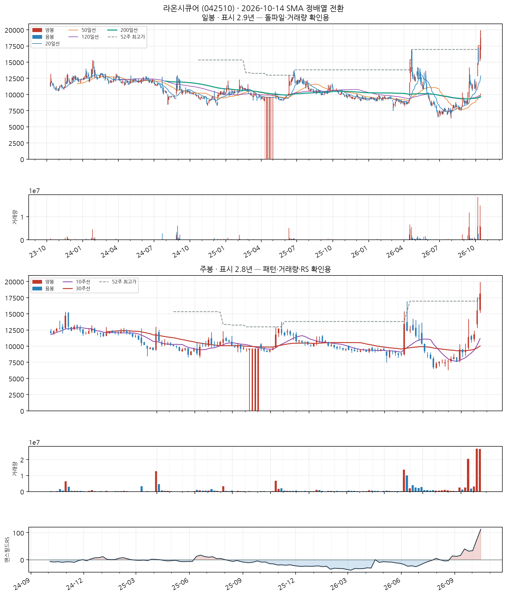
📐 차트 패턴 판정: 후보 없음 후보 없음 판정 기준(PDF)
세 패턴 모두 필수 조건을 채운 후보가 없다(가장 가까운 이중바닥 후보: 두 저점 일치: 저점 차이 21.0% — 같은 지지대로 보기 어려움(10% 초과)).
가장 강한 반증 이중바닥: 두 저점 일치: 저점 차이 21.0% — 같은 지지대로 보기 어려움(10% 초과); 컵위드핸들: 핸들: 핸들 저점 8,530가 컵 중간값 10,975 아래 — 핸들이 아니라 컵 재하락
경쟁 후보·더 단순한 설명 더 단순한 설명: 최근 26주 상승 추세 지속(+78.3%) — 베이스 없음
추가로 필요한 데이터 장중 고저 기준 깊이(여기 수치는 주봉 종가 기준) · 이번 주 완결 주봉(2026-10-16 라벨) — 미완결이라 판정에서 제외
패턴만으로 매수 추천이나 목표 달성 확률을 만들지 않습니다. 수치 기준은 잠정치이며 라벨 데이터로 검증되지 않았습니다.
CC — 분기 실적 성장 우수
2026 반기보고서(누적) · 순이익 흑자전환(+nan억원→+2.1억원) · EPS 흑자전환(+nan원→+28원) · 매출 흑자전환(+nan억원→+122억원)
DART 공시 기준 · 분기 단독 전년동기 대비 · 직전 분기보다 성장률이 높아짐(가속)
AA — 연간 실적 성장 미흡
2025 사업보고서(연간) · 순이익 -13.6% · EPS -15.9% · 매출 +2.0%
DART 공시 기준 · 연간 전년동기 대비 · 최근 3년 연속 증가는 아님 — 오닐 A 기준 미충족으로 한 단계 낮춤
NN — 신고가·모멘텀 데이터 없음
신고가 데이터 없음
SS — 수급(거래량) 우수
20일 평균 대비 1.50배
유통주식수·순매수 데이터는 미보유 (거래량으로만 근사)
LL — 주도주(상대강도) 우수
RS 등급 90/99 (126거래일 ≈ 6개월 기준 · 유니버스 1000종목 중 백분위) · 지수대비 +46.5%p
상위 시가총액 유니버스 기준 — KRX 전체 대비 백분위 아님 · 오닐의 RS Rating은 52주 기준이지만 여기는 126거래일로, 같은 리포트의 6개월 모멘텀과 기간을 맞춘 값이다(원전과 다름)
II — 기관·외국인 수급 양호
20일 순매수 +0.00% (거래대금 대비) · 최근절반 +0.12% vs 이전절반 -0.37% (개선) · 순매수 10일 · 누적 +0.1억원
**오닐의 I(기관 보유 종목 수의 증가)가 아니라 단기 순매수 흐름**을 쓴 대용값이다 — 보유 기관 수는 국내에 공개 데이터가 없다 · 한국투자증권 공식 API(KIS) 기준 · 기관+외국인 합산, 기타법인 제외로 거래대금은 소폭 과소추정 · 임계값은 아직 실측 검증 전 잠정치 — 수급 이력이 쌓이면 다른 지표와 같은 방식으로 구분력을 측정해 조정 예정
MM — 시장방향 미흡
KOSDAQ 지수가 20일선 아래
**오닐의 M(분산일·추종일 계수)이 아니라 지수의 이동평균 상회 여부**를 쓴 대용값이다 · 실제 매매 필터로는 미적용(표시 전용) — 종목 선별보다 지수 자체 타이밍이 더 효율적이라는 자체 검증 결과 있음 (reports/vs_kospi.md)
해상 운송업
업종 참고: RS 평균 66/99(업종 중 상위 7%) · 오늘 신호 2건 · 업종 평균이 코스피 대비 -3.5%p(126일), 종목별 편차 ±25%p
🧪 자체 섹터 분류(실험적, 참고용): S-Oil우·S-Oil 등 17종목 (업종 혼재)
섹터 내 RS 순위: 8/17위 (RS 82/99)
섹터 1~3위: S-Oil우(96), S-Oil(94), 팬오션(93)
※ 자체 상관관계 계산(최근 1년) — 검증 시 기준업종 11개 중 8개 정확. 주 단위로 구성종목이 일부 바뀔 수 있음(주간 일치도 실측 0.53)
종가 12,390 · 거래대금 24억
정배열 1일차거래량비 1.1x정배열 후 +0.0%
손절 11,399 | 목표 15,364 | 수량 807주
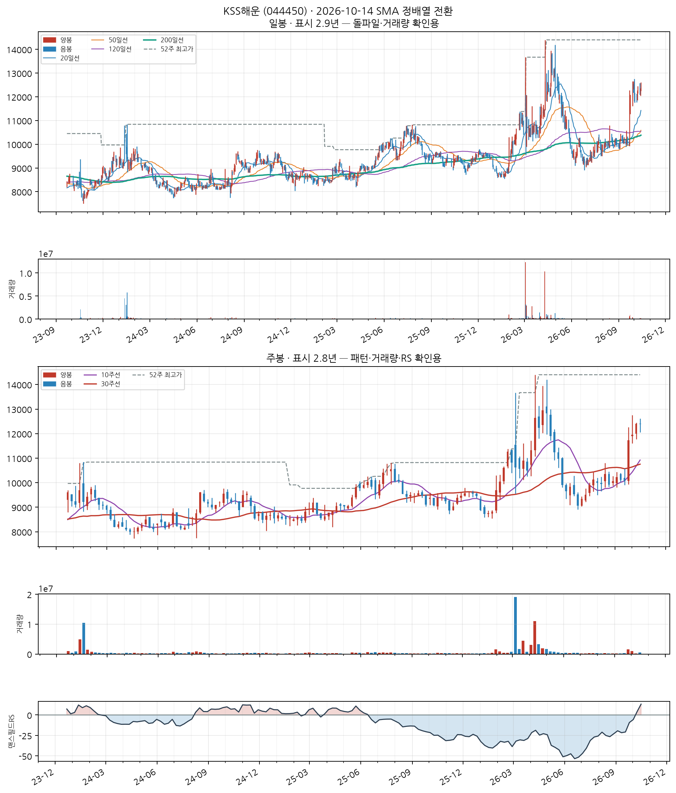
📐 차트 패턴 판정: 후보 없음 후보 없음 판정 기준(PDF)
세 패턴 모두 필수 조건을 채운 후보가 없다(가장 가까운 컵위드핸들 후보: 구조 독립성: 부모 컵(오른쪽 림 2026-04-24)의 핸들 하락(저점 2026-06-19)을 새 컵의 왼쪽 절반으로 재분할한 후보 — 자체 핸들이 아직 없다, 독립된 새 구조의 증거가 없다).
가장 강한 반증 컵위드핸들: 구조 독립성: 부모 컵(오른쪽 림 2026-04-24)의 핸들 하락(저점 2026-06-19)을 새 컵의 왼쪽 절반으로 재분할한 후보 — 자체 핸들이 아직 없다, 독립된 새 구조의 증거가 없다; 이중바닥: 두 저점 일치: 저점 차이 13.7% — 같은 지지대로 보기 어려움(10% 초과)
경쟁 후보·더 단순한 설명 더 단순한 설명: 최근 26주 하락 추세 지속(-1.9%) — 베이스 없음
추가로 필요한 데이터 장중 고저 기준 깊이(여기 수치는 주봉 종가 기준) · 이번 주 완결 주봉(2026-10-16 라벨) — 미완결이라 판정에서 제외
패턴만으로 매수 추천이나 목표 달성 확률을 만들지 않습니다. 수치 기준은 잠정치이며 라벨 데이터로 검증되지 않았습니다.
CC — 분기 실적 성장 양호
2026 반기보고서(누적) · 순이익 흑자전환(+nan억원→+170억원) · EPS 흑자전환(+nan원→+753원) · 매출 흑자전환(+nan억원→+1,599억원)
DART 공시 기준 · 분기 단독 전년동기 대비 · 직전 분기보다 성장률이 낮아짐(감속) — 오닐 C 기준으로 한 단계 낮춤
AA — 연간 실적 성장 미흡
2025 사업보고서(연간) · 순이익 -36.3% · EPS -36.3% · 매출 +8.4%
DART 공시 기준 · 연간 전년동기 대비 · 최근 3년 연속 증가는 아님 — 오닐 A 기준 미충족으로 한 단계 낮춤
NN — 신고가·모멘텀 데이터 없음
신고가 데이터 없음
SS — 수급(거래량) 양호
20일 평균 대비 1.13배
유통주식수·순매수 데이터는 미보유 (거래량으로만 근사)
LL — 주도주(상대강도) 우수
RS 등급 82/99 (126거래일 ≈ 6개월 기준 · 유니버스 1000종목 중 백분위) · 지수대비 +3.6%p
상위 시가총액 유니버스 기준 — KRX 전체 대비 백분위 아님 · 오닐의 RS Rating은 52주 기준이지만 여기는 126거래일로, 같은 리포트의 6개월 모멘텀과 기간을 맞춘 값이다(원전과 다름)
II — 기관·외국인 수급 보통
20일 순매수 +0.45% (거래대금 대비) · 최근절반 -5.58% vs 이전절반 +3.81% (약화) · 순매수 12일 · 누적 +1.8억원
**오닐의 I(기관 보유 종목 수의 증가)가 아니라 단기 순매수 흐름**을 쓴 대용값이다 — 보유 기관 수는 국내에 공개 데이터가 없다 · 한국투자증권 공식 API(KIS) 기준 · 기관+외국인 합산, 기타법인 제외로 거래대금은 소폭 과소추정 · 임계값은 아직 실측 검증 전 잠정치 — 수급 이력이 쌓이면 다른 지표와 같은 방식으로 구분력을 측정해 조정 예정 · 최근 유입이 이전보다 약해져 한 단계 낮춤
MM — 시장방향 미흡
KOSPI 지수가 60일선 아래
**오닐의 M(분산일·추종일 계수)이 아니라 지수의 이동평균 상회 여부**를 쓴 대용값이다 · 실제 매매 필터로는 미적용(표시 전용) — 종목 선별보다 지수 자체 타이밍이 더 효율적이라는 자체 검증 결과 있음 (reports/vs_kospi.md)
LG전자 (066570)
37일전 포착
KOSPI
통신 및 방송 장비 제조업
업종 참고: RS 평균 46/99(업종 중 상위 66%) · 오늘 신호 1건 · 업종 평균이 코스닥 대비 +7.7%p(126일), 종목별 편차 ±27%p
🧪 자체 섹터 분류(실험적, 참고용): 컴퓨터 프로그래밍, 시스템 통합 및 관리업 (LG전자·LG전자우 등 6종목)
섹터 내 RS 순위: 1/6위 (RS 95/99)
섹터 1~3위: LG전자(95), LG전자우(91), LG(88)
※ 자체 상관관계 계산(최근 1년) — 검증 시 기준업종 11개 중 8개 정확. 주 단위로 구성종목이 일부 바뀔 수 있음(주간 일치도 실측 0.53)
종가 177,800 · 거래대금 1,337억
정배열 1일차거래량비 0.9x정배열 후 +0.0%
손절 163,576 | 목표 220,472 | 수량 56주
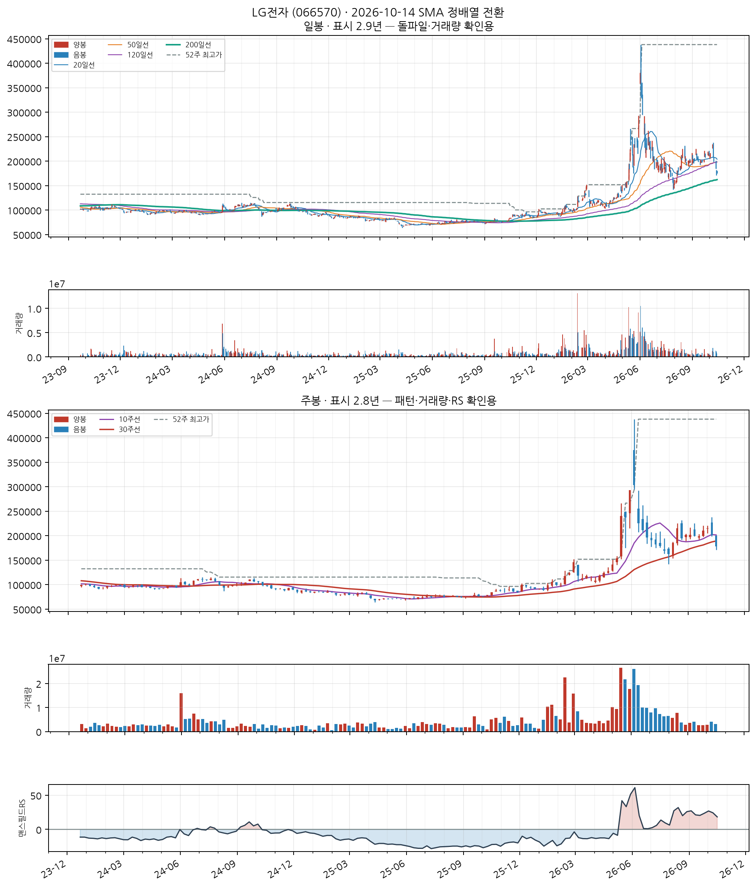
📐 차트 패턴 판정: 후보 없음 후보 없음 판정 기준(PDF)
세 패턴 모두 필수 조건을 채운 후보가 없다(가장 가까운 이중바닥 후보: 두 저점 일치: 저점 차이 33.2% — 같은 지지대로 보기 어려움(10% 초과)).
가장 강한 반증 이중바닥: 두 저점 일치: 저점 차이 33.2% — 같은 지지대로 보기 어려움(10% 초과); 컵위드핸들: 깊이: 컵 깊이 64.3% — 기준 12%~33%(고변동 최대 50%)를 벗어남
경쟁 후보·더 단순한 설명 더 단순한 설명: 최근 26주 상승 추세 지속(+69.8%) — 베이스 없음
추가로 필요한 데이터 장중 고저 기준 깊이(여기 수치는 주봉 종가 기준) · 이번 주 완결 주봉(2026-10-16 라벨) — 미완결이라 판정에서 제외
패턴만으로 매수 추천이나 목표 달성 확률을 만들지 않습니다. 수치 기준은 잠정치이며 라벨 데이터로 검증되지 않았습니다.
CC — 분기 실적 성장 우수
2026 반기보고서(누적) · 순이익 흑자전환(+nan억원→+7,813억원) · EPS 흑자전환(+nan원→+3,733원) · 매출 흑자전환(+nan억원→+238,265억원)
DART 공시 기준 · 분기 단독 전년동기 대비 · 직전 분기보다 성장률이 높아짐(가속)
AA — 연간 실적 성장 보통
2025 사업보고서(연간) · 순이익 +106.4% · EPS +157.9% · 매출 +1.7%
DART 공시 기준 · 연간 전년동기 대비 · 최근 3년 연속 증가는 아님 — 오닐 A 기준 미충족으로 한 단계 낮춤
NN — 신고가·모멘텀 데이터 없음
신고가 데이터 없음
SS — 수급(거래량) 미흡
20일 평균 대비 0.94배
유통주식수·순매수 데이터는 미보유 (거래량으로만 근사)
LL — 주도주(상대강도) 우수
RS 등급 95/99 (126거래일 ≈ 6개월 기준 · 유니버스 1000종목 중 백분위) · 지수대비 +44.3%p
상위 시가총액 유니버스 기준 — KRX 전체 대비 백분위 아님 · 오닐의 RS Rating은 52주 기준이지만 여기는 126거래일로, 같은 리포트의 6개월 모멘텀과 기간을 맞춘 값이다(원전과 다름)
II — 기관·외국인 수급 미흡
20일 순매수 -0.89% (거래대금 대비) · 최근절반 -10.18% vs 이전절반 +11.87% (약화) · 순매수 10일 · 누적 -293.8억원
**오닐의 I(기관 보유 종목 수의 증가)가 아니라 단기 순매수 흐름**을 쓴 대용값이다 — 보유 기관 수는 국내에 공개 데이터가 없다 · 한국투자증권 공식 API(KIS) 기준 · 기관+외국인 합산, 기타법인 제외로 거래대금은 소폭 과소추정 · 임계값은 아직 실측 검증 전 잠정치 — 수급 이력이 쌓이면 다른 지표와 같은 방식으로 구분력을 측정해 조정 예정
MM — 시장방향 미흡
KOSPI 지수가 60일선 아래
**오닐의 M(분산일·추종일 계수)이 아니라 지수의 이동평균 상회 여부**를 쓴 대용값이다 · 실제 매매 필터로는 미적용(표시 전용) — 종목 선별보다 지수 자체 타이밍이 더 효율적이라는 자체 검증 결과 있음 (reports/vs_kospi.md)
일차전지 및 이차전지 제조업
업종 참고: RS 평균 51/99(업종 중 상위 53%) · 오늘 신호 2건 · 업종 평균이 코스피 대비 -15.0%p(126일), 종목별 편차 ±29%p
🧪 자체 섹터 분류(실험적, 참고용): 삼아알미늄·롯데에너지머티리얼즈 등 13종목 (업종 혼재)
섹터 내 RS 순위: 3/13위 (RS 76/99)
섹터 1~3위: 삼아알미늄(93), 롯데에너지머티리얼즈(84), 상신이디피(76)
※ 자체 상관관계 계산(최근 1년) — 검증 시 기준업종 11개 중 8개 정확. 주 단위로 구성종목이 일부 바뀔 수 있음(주간 일치도 실측 0.53)
종가 26,450 · 거래대금 159억
정배열 1일차거래량비 1.7x정배열 후 +0.0%
손절 24,334 | 목표 32,798 | 수량 378주
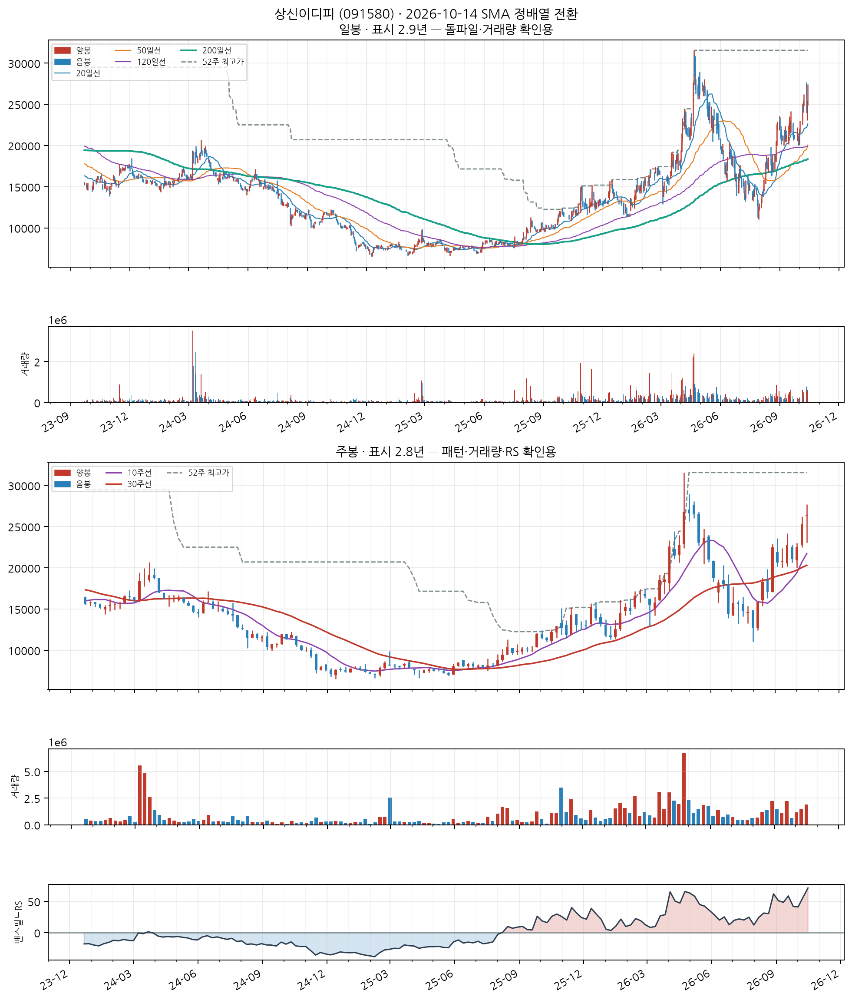
📐 차트 패턴: 약한 유사 — 이중바닥 형태 완성·미돌파 확신 낮음 판정 기준(PDF)
W 형태는 있으나 중간 고점 26,800를 아직 넘지 못했다.
가장 강한 반증 선행 추세: 선행 추세가 상승(+88.8%) — 상승 중 눌림일 수 있어 반전형 전제가 없다
경쟁 후보·더 단순한 설명 더 단순한 설명: 선행 하락이 없어 반전형이 아니라 상승 추세 중 눌림(조정)일 수 있다
측정표 (주봉 종가 기준, 판정일 2026-10-14 이후 데이터 미사용)
조건별 판정
- 미충족 선행 추세 — 선행 추세가 상승(+88.8%) — 상승 중 눌림일 수 있어 반전형 전제가 없다
- 부분충족 두 저점 일치 — 저점 차이 8.8% — 6% 초과
- 부분충족 중간 반등 — 중간 반등 130.4% — 30%를 넘어 W가 아니라 독립된 두 파동일 수 있음
- 충족 기간 — 베이스 43주 ≥ 7주
- 충족 깊이 — 베이스 깊이 23.5% ≤ 40%
- 충족 저점2 매도 약화 — 저점2 부근 거래량 = 저점1 부근의 0.65배
- 충족 최근성 — 마지막 구조 피벗(2026-07-31)이 10주 전
- 미충족 넥라인 돌파 — 종가가 아직 확인선 위로 안 올라옴(-5.6%)
- 판정불가 돌파 거래량 — 돌파 전
추가로 필요한 데이터 장중 고저 기준 깊이(여기 수치는 주봉 종가 기준) · 이번 주 완결 주봉(2026-10-16 라벨) — 미완결이라 판정에서 제외
패턴만으로 매수 추천이나 목표 달성 확률을 만들지 않습니다. 수치 기준은 잠정치이며 라벨 데이터로 검증되지 않았습니다.
CC — 분기 실적 성장 우수
2026 반기보고서(누적) · 순이익 흑자전환(+nan억원→+54억원) · 매출 흑자전환(+nan억원→+860억원)
DART 공시 기준 · 분기 단독 전년동기 대비 · 직전 분기보다 성장률이 높아짐(가속) · EPS 데이터가 없어 순이익·매출로만 판정 — 자사주 매입 착시를 거르지 못함
AA — 연간 실적 성장 보통
2025 사업보고서(연간) · 순이익 +214.6% · 매출 +2.0%
DART 공시 기준 · 연간 전년동기 대비 · 최근 3년 연속 증가는 아님 — 오닐 A 기준 미충족으로 한 단계 낮춤 · EPS 데이터가 없어 순이익·매출로만 판정 — 자사주 매입 착시를 거르지 못함
NN — 신고가·모멘텀 데이터 없음
신고가 데이터 없음
SS — 수급(거래량) 우수
20일 평균 대비 1.70배
유통주식수·순매수 데이터는 미보유 (거래량으로만 근사)
LL — 주도주(상대강도) 양호
RS 등급 76/99 (126거래일 ≈ 6개월 기준 · 유니버스 1000종목 중 백분위) · 지수대비 +25.5%p
상위 시가총액 유니버스 기준 — KRX 전체 대비 백분위 아님 · 오닐의 RS Rating은 52주 기준이지만 여기는 126거래일로, 같은 리포트의 6개월 모멘텀과 기간을 맞춘 값이다(원전과 다름)
II — 기관·외국인 수급 양호
20일 순매수 +0.84% (거래대금 대비) · 최근절반 +4.71% vs 이전절반 -4.74% (개선) · 순매수 11일 · 누적 +14.7억원
**오닐의 I(기관 보유 종목 수의 증가)가 아니라 단기 순매수 흐름**을 쓴 대용값이다 — 보유 기관 수는 국내에 공개 데이터가 없다 · 한국투자증권 공식 API(KIS) 기준 · 기관+외국인 합산, 기타법인 제외로 거래대금은 소폭 과소추정 · 임계값은 아직 실측 검증 전 잠정치 — 수급 이력이 쌓이면 다른 지표와 같은 방식으로 구분력을 측정해 조정 예정
MM — 시장방향 미흡
KOSDAQ 지수가 20일선 아래
**오닐의 M(분산일·추종일 계수)이 아니라 지수의 이동평균 상회 여부**를 쓴 대용값이다 · 실제 매매 필터로는 미적용(표시 전용) — 종목 선별보다 지수 자체 타이밍이 더 효율적이라는 자체 검증 결과 있음 (reports/vs_kospi.md)
시멘트, 석회, 플라스터 및 그 제품 제조업
업종 참고: RS 평균 58/99(업종 중 상위 31%) · 오늘 신호 2건 · 업종 평균이 코스피 대비 +44.2%p(126일), 종목별 편차 ±154%p
🧪 자체 섹터 분류(실험적, 참고용): 서산·금호건설 등 17종목 (업종 혼재)
섹터 내 RS 순위: 10/17위 (RS 64/99)
섹터 1~3위: 서산(99), 금호건설(98), 금호타이어(84)
※ 자체 상관관계 계산(최근 1년) — 검증 시 기준업종 11개 중 8개 정확. 주 단위로 구성종목이 일부 바뀔 수 있음(주간 일치도 실측 0.53)
종가 9,970 · 거래대금 4.7억
정배열 1일차거래량비 1.3x정배열 후 +0.0%
손절 9,172 | 목표 12,363 | 수량 1,003주
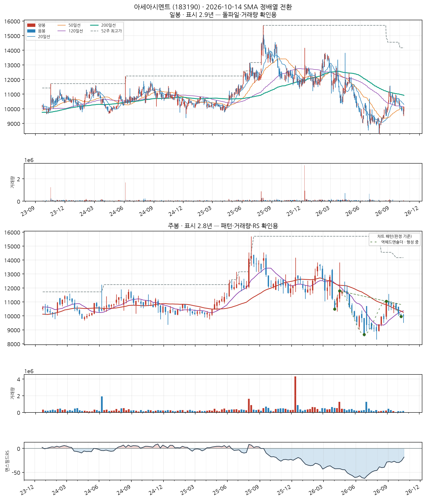
📐 역헤드앤숄더 · 형성 중
📐 차트 패턴 판정: 역헤드앤숄더 형성 중 확신 중간 판정 기준(PDF)
오른쪽 어깨(9,950) 부근에 머물러 있어 어깨가 완성됐다고 보기 이르다.
가장 강한 반증 선행 추세: 선행 하락 -13.2% — -15%까지 안 내려옴
경쟁 후보·더 단순한 설명 없음
측정표 (주봉 종가 기준, 판정일 2026-10-14 이후 데이터 미사용)
조건별 판정
- 부분충족 선행 추세 — 선행 하락 -13.2% — -15%까지 안 내려옴
- 충족 머리 깊이 — 양 어깨 대비 최소 13.0% ≥ 3.5%
- 충족 어깨 대칭 — 어깨 높이차 5.1% ≤ 15%
- 충족 기간 — 어깨 간 27주 ≥ 6주
- 충족 시간 대칭 — 머리 좌우 기간 비 1.25
- 충족 넥라인 기울기 — 주당 -0.3%
- 충족 오른쪽 어깨 매도 약화 — 오른쪽 어깨 부근 거래량 = 머리 부근의 0.20배
- 충족 최근성 — 마지막 구조 피벗(2026-10-08)이 0주 전
- 미충족 넥라인 돌파 — 종가가 아직 확인선 위로 안 올라옴(-8.0%)
- 판정불가 돌파 거래량 — 돌파 전
추가로 필요한 데이터 장중 고저 기준 깊이(여기 수치는 주봉 종가 기준) · 이번 주 완결 주봉(2026-10-16 라벨) — 미완결이라 판정에서 제외
패턴만으로 매수 추천이나 목표 달성 확률을 만들지 않습니다. 수치 기준은 잠정치이며 라벨 데이터로 검증되지 않았습니다.
CC — 분기 실적 성장 양호
2026 반기보고서(누적) · 순이익 흑자전환(+nan억원→+128억원) · EPS 흑자전환(+nan원→+396원)
DART 공시 기준 · 분기 단독 전년동기 대비 · 직전 분기보다 성장률이 낮아짐(감속) — 오닐 C 기준으로 한 단계 낮춤
AA — 연간 실적 성장 미흡
2025 사업보고서(연간) · 순이익 -79.5% · EPS -78.8% · 매출 -7.9%
DART 공시 기준 · 연간 전년동기 대비 · 최근 3년 연속 증가는 아님 — 오닐 A 기준 미충족으로 한 단계 낮춤
NN — 신고가·모멘텀 데이터 없음
신고가 데이터 없음
SS — 수급(거래량) 양호
20일 평균 대비 1.32배
유통주식수·순매수 데이터는 미보유 (거래량으로만 근사)
LL — 주도주(상대강도) 보통
RS 등급 64/99 (126거래일 ≈ 6개월 기준 · 유니버스 1000종목 중 백분위) · 지수대비 -11.5%p
상위 시가총액 유니버스 기준 — KRX 전체 대비 백분위 아님 · 오닐의 RS Rating은 52주 기준이지만 여기는 126거래일로, 같은 리포트의 6개월 모멘텀과 기간을 맞춘 값이다(원전과 다름)
II — 기관·외국인 수급 미흡
20일 순매수 -6.92% (거래대금 대비) · 최근절반 -3.06% vs 이전절반 -12.36% (개선) · 순매수 5일 · 누적 -4.4억원
**오닐의 I(기관 보유 종목 수의 증가)가 아니라 단기 순매수 흐름**을 쓴 대용값이다 — 보유 기관 수는 국내에 공개 데이터가 없다 · 한국투자증권 공식 API(KIS) 기준 · 기관+외국인 합산, 기타법인 제외로 거래대금은 소폭 과소추정 · 임계값은 아직 실측 검증 전 잠정치 — 수급 이력이 쌓이면 다른 지표와 같은 방식으로 구분력을 측정해 조정 예정
MM — 시장방향 미흡
KOSPI 지수가 60일선 아래
**오닐의 M(분산일·추종일 계수)이 아니라 지수의 이동평균 상회 여부**를 쓴 대용값이다 · 실제 매매 필터로는 미적용(표시 전용) — 종목 선별보다 지수 자체 타이밍이 더 효율적이라는 자체 검증 결과 있음 (reports/vs_kospi.md)
특수 목적용 기계 제조업
업종 참고: RS 평균 55/99(업종 중 상위 43%) · 오늘 신호 5건 · 업종 평균이 코스닥 대비 +24.5%p(126일), 종목별 편차 ±52%p
🧪 자체 섹터 분류(실험적, 참고용): 특수 목적용 기계 제조업 (피에스케이홀딩스·케이씨텍 등 26종목)
섹터 내 RS 순위: 5/26위 (RS 92/99)
섹터 1~3위: 피에스케이홀딩스(98), 케이씨텍(98), 테스(97)
※ 자체 상관관계 계산(최근 1년) — 검증 시 기준업종 11개 중 8개 정확. 주 단위로 구성종목이 일부 바뀔 수 있음(주간 일치도 실측 0.53)
종가 56,900 · 거래대금 1,026억
정배열 1일차거래량비 0.8x정배열 후 +0.0%
손절 52,348 | 목표 70,556 | 수량 175주
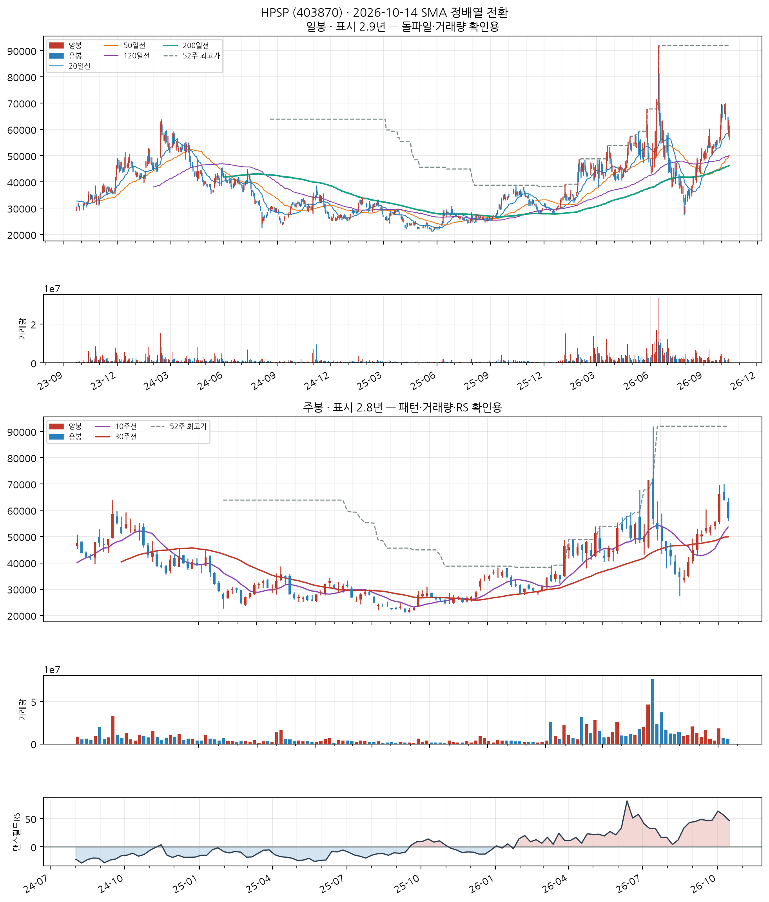
📐 차트 패턴 판정: 후보 없음 후보 없음 판정 기준(PDF)
세 패턴 모두 필수 조건을 채운 후보가 없다(가장 가까운 컵위드핸들 후보: 림 대칭: 좌우 림 차이 28.4% — 오른쪽 림이 높음, 20% 초과).
가장 강한 반증 컵위드핸들: 림 대칭: 좌우 림 차이 28.4% — 오른쪽 림이 높음, 20% 초과; 이중바닥: 두 저점 일치: 저점 차이 29.3% — 같은 지지대로 보기 어려움(10% 초과)
경쟁 후보·더 단순한 설명 더 단순한 설명: 최근 26주 상승 추세 지속(+40.5%) — 베이스 없음
추가로 필요한 데이터 장중 고저 기준 깊이(여기 수치는 주봉 종가 기준) · 이번 주 완결 주봉(2026-10-16 라벨) — 미완결이라 판정에서 제외
패턴만으로 매수 추천이나 목표 달성 확률을 만들지 않습니다. 수치 기준은 잠정치이며 라벨 데이터로 검증되지 않았습니다.
CC — 분기 실적 성장 양호
2026 반기보고서(누적) · 순이익 흑자전환(+nan억원→+241억원) · EPS 흑자전환(+nan원→+296원) · 매출 흑자전환(+nan억원→+461억원)
DART 공시 기준 · 분기 단독 전년동기 대비 · 직전 분기보다 성장률이 낮아짐(감속) — 오닐 C 기준으로 한 단계 낮춤
AA — 연간 실적 성장 미흡
2025 사업보고서(연간) · 순이익 -15.8% · EPS -14.7% · 매출 -4.7%
DART 공시 기준 · 연간 전년동기 대비 · 최근 3년 연속 증가는 아님 — 오닐 A 기준 미충족으로 한 단계 낮춤
NN — 신고가·모멘텀 데이터 없음
신고가 데이터 없음
SS — 수급(거래량) 미흡
20일 평균 대비 0.77배
유통주식수·순매수 데이터는 미보유 (거래량으로만 근사)
LL — 주도주(상대강도) 우수
RS 등급 92/99 (126거래일 ≈ 6개월 기준 · 유니버스 1000종목 중 백분위) · 지수대비 +53.3%p
상위 시가총액 유니버스 기준 — KRX 전체 대비 백분위 아님 · 오닐의 RS Rating은 52주 기준이지만 여기는 126거래일로, 같은 리포트의 6개월 모멘텀과 기간을 맞춘 값이다(원전과 다름)
II — 기관·외국인 수급 우수
20일 순매수 +5.01% (거래대금 대비) · 최근절반 +5.36% vs 이전절반 +4.08% (개선) · 순매수 13일 · 누적 +1,257.8억원
**오닐의 I(기관 보유 종목 수의 증가)가 아니라 단기 순매수 흐름**을 쓴 대용값이다 — 보유 기관 수는 국내에 공개 데이터가 없다 · 한국투자증권 공식 API(KIS) 기준 · 기관+외국인 합산, 기타법인 제외로 거래대금은 소폭 과소추정 · 임계값은 아직 실측 검증 전 잠정치 — 수급 이력이 쌓이면 다른 지표와 같은 방식으로 구분력을 측정해 조정 예정
MM — 시장방향 미흡
KOSDAQ 지수가 20일선 아래
**오닐의 M(분산일·추종일 계수)이 아니라 지수의 이동평균 상회 여부**를 쓴 대용값이다 · 실제 매매 필터로는 미적용(표시 전용) — 종목 선별보다 지수 자체 타이밍이 더 효율적이라는 자체 검증 결과 있음 (reports/vs_kospi.md)
전자부품 제조업
업종 참고: RS 평균 56/99(업종 중 상위 37%) · 오늘 신호 5건 · 업종 평균이 코스닥 대비 +23.1%p(126일), 종목별 편차 ±40%p
🧪 자체 섹터 분류(실험적, 참고용): 드림텍·도우인시스 등 28종목 (업종 혼재)
섹터 내 RS 순위: 8/28위 (RS 55/99)
섹터 1~3위: 드림텍(91), 도우인시스(89), 후성(85)
※ 자체 상관관계 계산(최근 1년) — 검증 시 기준업종 11개 중 8개 정확. 주 단위로 구성종목이 일부 바뀔 수 있음(주간 일치도 실측 0.53)
종가 9,540 · 거래대금 89억
정배열 1일차거래량비 0.8x정배열 후 +0.0%
손절 8,777 | 목표 11,830 | 수량 1,048주
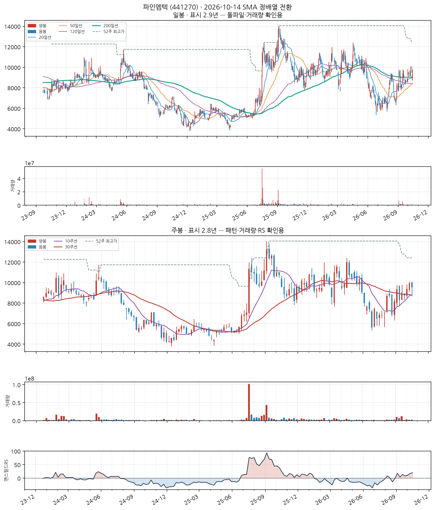
📐 차트 패턴: 약한 유사 — 컵위드핸들 형성 중 확신 낮음 판정 기준(PDF)
컵 구조(25주·깊이 42.7%)는 있으나 핸들이 아직 없다 — 형성 중.
가장 강한 반증 깊이: 컵 깊이 42.7% — 기준 12%~33% 밖(고변동 종목이라 50%까지 예외 허용)
경쟁 후보·더 단순한 설명 더 단순한 설명: 깊이 조건이 약해 단순 횡보·박스로 볼 여지가 있다(컵 깊이 42.7% — 기준 12%~33% 밖(고변동 종목이라 50%까지 예외 허용))
측정표 (주봉 종가 기준, 판정일 2026-10-14 이후 데이터 미사용)
조건별 판정
- 충족 선행 추세 — 선행 상승 +25.3% ≥ +20%
- 충족 기간 — 컵 25주 (기준 7~65주)
- 부분충족 깊이 — 컵 깊이 42.7% — 기준 12%~33% 밖(고변동 종목이라 50%까지 예외 허용)
- 부분충족 림 대칭 — 좌우 림 차이 17.1% — 12% 초과
- 부분충족 U자 모양 — 바닥 형태(3주 중앙값 평활): 직선 V 템플릿 오차 0.141 vs 포물선 U 템플릿 오차 0.133 → 치우침 +0.007 (V=−0.167·U=+0.167, 기각 ≤-0.05·충족 ≥+0.05) · 바닥 중심 위치 50% — V와 U 사이 — 둥근 바닥의 증거가 약함
- 충족 베이스 거래량 수축 — 컵 구간 평균 = 직전 25주 평균의 0.78배
- 판정불가 핸들 — 오른쪽 림 이후 봉이 없어 핸들 미형성
- 충족 최근성 — 마지막 구조 피벗(2026-10-08)이 0주 전
- 미충족 피벗 돌파 — 종가가 아직 확인선 위로 안 올라옴(+0.0%)
- 판정불가 돌파 거래량 — 돌파 전
추가로 필요한 데이터 장중 고저 기준 깊이(여기 수치는 주봉 종가 기준) · 이번 주 완결 주봉(2026-10-16 라벨) — 미완결이라 판정에서 제외
패턴만으로 매수 추천이나 목표 달성 확률을 만들지 않습니다. 수치 기준은 잠정치이며 라벨 데이터로 검증되지 않았습니다.
CC — 분기 실적 성장 데이터 없음
데이터 없음 — DART 조회 실패 또는 공시 없음 (DART_API_KEY 필요)
AA — 연간 실적 성장 미흡
2025 사업보고서(연간) · 순이익 적자축소(-158억원→-154억원)
DART 공시 기준 · 연간 전년동기 대비 · 적자폭은 줄었으나 여전히 적자 — 오닐의 이익성장 기준은 미충족 · 최근 3년 연속 증가는 아님 — 오닐 A 기준 미충족으로 한 단계 낮춤 · EPS 데이터가 없어 순이익·매출로만 판정 — 자사주 매입 착시를 거르지 못함
NN — 신고가·모멘텀 데이터 없음
신고가 데이터 없음
SS — 수급(거래량) 미흡
20일 평균 대비 0.83배
유통주식수·순매수 데이터는 미보유 (거래량으로만 근사)
LL — 주도주(상대강도) 보통
RS 등급 55/99 (126거래일 ≈ 6개월 기준 · 유니버스 1000종목 중 백분위) · 지수대비 +10.5%p
상위 시가총액 유니버스 기준 — KRX 전체 대비 백분위 아님 · 오닐의 RS Rating은 52주 기준이지만 여기는 126거래일로, 같은 리포트의 6개월 모멘텀과 기간을 맞춘 값이다(원전과 다름)
II — 기관·외국인 수급 양호
20일 순매수 +10.60% (거래대금 대비) · 최근절반 +9.51% vs 이전절반 +11.21% (약화) · 순매수 12일 · 누적 +216.8억원
**오닐의 I(기관 보유 종목 수의 증가)가 아니라 단기 순매수 흐름**을 쓴 대용값이다 — 보유 기관 수는 국내에 공개 데이터가 없다 · 한국투자증권 공식 API(KIS) 기준 · 기관+외국인 합산, 기타법인 제외로 거래대금은 소폭 과소추정 · 임계값은 아직 실측 검증 전 잠정치 — 수급 이력이 쌓이면 다른 지표와 같은 방식으로 구분력을 측정해 조정 예정 · 최근 유입이 이전보다 약해져 한 단계 낮춤
MM — 시장방향 미흡
KOSDAQ 지수가 20일선 아래
**오닐의 M(분산일·추종일 계수)이 아니라 지수의 이동평균 상회 여부**를 쓴 대용값이다 · 실제 매매 필터로는 미적용(표시 전용) — 종목 선별보다 지수 자체 타이밍이 더 효율적이라는 자체 검증 결과 있음 (reports/vs_kospi.md)
전기 통신업
업종 참고: RS 평균 54/99(업종 중 상위 46%) · 오늘 신호 1건 · 업종 평균이 코스피 대비 -15.9%p(126일), 종목별 편차 ±20%p
🧪 자체 섹터 분류(실험적, 참고용): 핑거·우리기술투자 등 12종목 (업종 혼재)
섹터 내 RS 순위: 5/12위 (RS 32/99)
섹터 1~3위: 핑거(85), 우리기술투자(57), 쿠콘(54)
※ 자체 상관관계 계산(최근 1년) — 검증 시 기준업종 11개 중 8개 정확. 주 단위로 구성종목이 일부 바뀔 수 있음(주간 일치도 실측 0.53)
종가 2,650 · 거래대금 25억
정배열 1일차거래량비 0.3x정배열 후 +0.0%
손절 2,438 | 목표 3,286 | 수량 3,773주
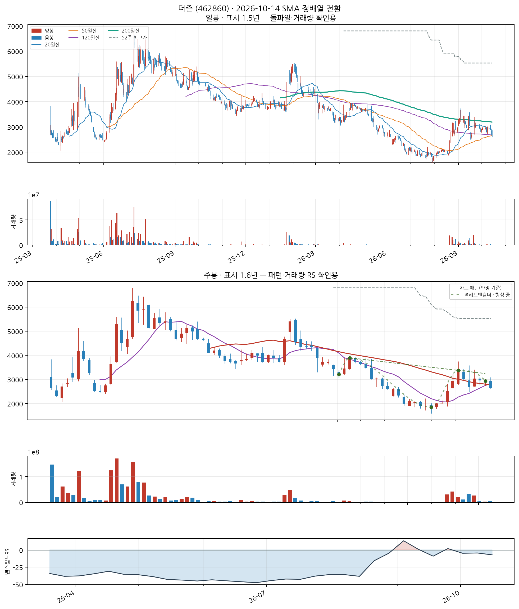
📐 역헤드앤숄더 · 형성 중
📐 차트 패턴 판정: 역헤드앤숄더 형성 중 확신 중간 판정 기준(PDF)
오른쪽 어깨(2,935) 부근에 머물러 있어 어깨가 완성됐다고 보기 이르다.
가장 강한 반증 오른쪽 어깨 매도 약화: 오른쪽 어깨 부근 거래량 = 머리 부근의 3.33배
경쟁 후보·더 단순한 설명 없음
측정표 (주봉 종가 기준, 판정일 2026-10-14 이후 데이터 미사용)
조건별 판정
- 충족 선행 추세 — 선행 하락 -31.4% ≤ -15%
- 충족 머리 깊이 — 양 어깨 대비 최소 37.1% ≥ 3.5%
- 충족 어깨 대칭 — 어깨 높이차 8.7% ≤ 15%
- 충족 기간 — 어깨 간 27주 ≥ 6주
- 충족 시간 대칭 — 머리 좌우 기간 비 0.59
- 충족 넥라인 기울기 — 주당 -0.7%
- 부분충족 오른쪽 어깨 매도 약화 — 오른쪽 어깨 부근 거래량 = 머리 부근의 3.33배
- 충족 최근성 — 마지막 구조 피벗(2026-10-08)이 0주 전
- 미충족 넥라인 돌파 — 종가가 아직 확인선 위로 안 올라옴(-9.6%)
- 판정불가 돌파 거래량 — 돌파 전
추가로 필요한 데이터 장중 고저 기준 깊이(여기 수치는 주봉 종가 기준) · 이번 주 완결 주봉(2026-10-16 라벨) — 미완결이라 판정에서 제외
패턴만으로 매수 추천이나 목표 달성 확률을 만들지 않습니다. 수치 기준은 잠정치이며 라벨 데이터로 검증되지 않았습니다.
CC — 분기 실적 성장 양호
2026 반기보고서(누적) · 순이익 흑자전환(+nan억원→+27억원) · EPS 흑자전환(+nan원→+40원) · 매출 흑자전환(+nan억원→+150억원)
DART 공시 기준 · 분기 단독 전년동기 대비 · 직전 분기보다 성장률이 낮아짐(감속) — 오닐 C 기준으로 한 단계 낮춤
AA — 연간 실적 성장 미흡
2025 사업보고서(연간) · 순이익 +8.3% · EPS +8.8% · 매출 -4.3%
DART 공시 기준 · 연간 전년동기 대비
NN — 신고가·모멘텀 데이터 없음
신고가 데이터 없음
SS — 수급(거래량) 미흡
20일 평균 대비 0.28배
유통주식수·순매수 데이터는 미보유 (거래량으로만 근사)
LL — 주도주(상대강도) 보통
RS 등급 32/99 (126거래일 ≈ 6개월 기준 · 유니버스 1000종목 중 백분위) · 지수대비 -2.6%p
상위 시가총액 유니버스 기준 — KRX 전체 대비 백분위 아님 · 오닐의 RS Rating은 52주 기준이지만 여기는 126거래일로, 같은 리포트의 6개월 모멘텀과 기간을 맞춘 값이다(원전과 다름)
II — 기관·외국인 수급 보통
20일 순매수 +0.04% (거래대금 대비) · 최근절반 -0.29% vs 이전절반 +0.08% (약화) · 순매수 8일 · 누적 +0.8억원
**오닐의 I(기관 보유 종목 수의 증가)가 아니라 단기 순매수 흐름**을 쓴 대용값이다 — 보유 기관 수는 국내에 공개 데이터가 없다 · 한국투자증권 공식 API(KIS) 기준 · 기관+외국인 합산, 기타법인 제외로 거래대금은 소폭 과소추정 · 임계값은 아직 실측 검증 전 잠정치 — 수급 이력이 쌓이면 다른 지표와 같은 방식으로 구분력을 측정해 조정 예정 · 최근 유입이 이전보다 약해져 한 단계 낮춤
MM — 시장방향 미흡
KOSDAQ 지수가 20일선 아래
**오닐의 M(분산일·추종일 계수)이 아니라 지수의 이동평균 상회 여부**를 쓴 대용값이다 · 실제 매매 필터로는 미적용(표시 전용) — 종목 선별보다 지수 자체 타이밍이 더 효율적이라는 자체 검증 결과 있음 (reports/vs_kospi.md)
도우인시스 (484120)
15일전 포착
KOSDAQ
전자부품 제조업
업종 참고: RS 평균 56/99(업종 중 상위 37%) · 오늘 신호 5건 · 업종 평균이 코스닥 대비 +23.1%p(126일), 종목별 편차 ±40%p
🧪 자체 섹터 분류(실험적, 참고용): 드림텍·도우인시스 등 28종목 (업종 혼재)
섹터 내 RS 순위: 2/28위 (RS 89/99)
섹터 1~3위: 드림텍(91), 도우인시스(89), 후성(85)
※ 자체 상관관계 계산(최근 1년) — 검증 시 기준업종 11개 중 8개 정확. 주 단위로 구성종목이 일부 바뀔 수 있음(주간 일치도 실측 0.53)
종가 23,750 · 거래대금 36억
정배열 10일차거래량비 2.2x정배열 후 -2.1%
손절 21,850 | 목표 29,450 | 수량 421주
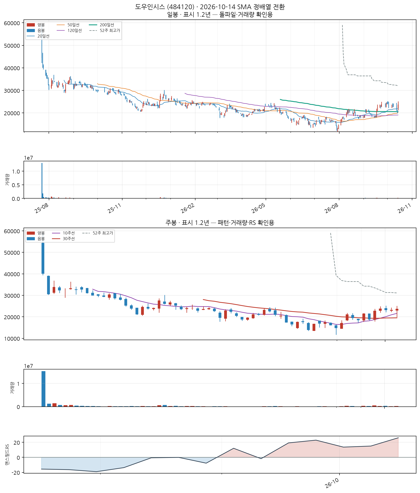
📐 차트 패턴: 약한 유사 — 컵위드핸들 형성 중 확신 낮음 판정 기준(PDF)
컵 구조(23주·깊이 36.8%)는 있으나 핸들이 아직 없다 — 형성 중.
가장 강한 반증 선행 추세: 선행 추세가 하락(-16.7%) — 지속형 컵의 전제가 없다(라운딩 바텀 가능)
경쟁 후보·더 단순한 설명 더 단순한 설명: 선행 상승이 없어 컵이 아니라 하락 뒤 라운딩 바텀일 수 있다
측정표 (주봉 종가 기준, 판정일 2026-10-14 이후 데이터 미사용)
조건별 판정
- 미충족 선행 추세 — 선행 추세가 하락(-16.7%) — 지속형 컵의 전제가 없다(라운딩 바텀 가능)
- 충족 기간 — 컵 23주 (기준 7~65주)
- 부분충족 깊이 — 컵 깊이 36.8% — 기준 12%~33% 밖(고변동 종목이라 50%까지 예외 허용)
- 충족 림 대칭 — 좌우 림 차이 0.2% ≤ 12%
- 부분충족 U자 모양 — 바닥 형태(3주 중앙값 평활): 직선 V 템플릿 오차 0.125 vs 포물선 U 템플릿 오차 0.126 → 치우침 -0.001 (V=−0.167·U=+0.167, 기각 ≤-0.05·충족 ≥+0.05) · 바닥 중심 위치 46% — V와 U 사이 — 둥근 바닥의 증거가 약함
- 충족 베이스 거래량 수축 — 컵 구간 평균 = 직전 23주 평균의 0.92배
- 판정불가 핸들 — 오른쪽 림 이후 봉이 없어 핸들 미형성
- 충족 최근성 — 마지막 구조 피벗(2026-10-08)이 0주 전
- 미충족 피벗 돌파 — 종가가 아직 확인선 위로 안 올라옴(+0.0%)
- 판정불가 돌파 거래량 — 돌파 전
추가로 필요한 데이터 장중 고저 기준 깊이(여기 수치는 주봉 종가 기준) · 이번 주 완결 주봉(2026-10-16 라벨) — 미완결이라 판정에서 제외
패턴만으로 매수 추천이나 목표 달성 확률을 만들지 않습니다. 수치 기준은 잠정치이며 라벨 데이터로 검증되지 않았습니다.
CC — 분기 실적 성장 우수
2026 반기보고서(누적) · 순이익 흑자전환(+nan억원→+98억원) · EPS 흑자전환(+nan원→+896원)
DART 공시 기준 · 분기 단독 전년동기 대비
AA — 연간 실적 성장 미흡
2025 사업보고서(연간) · 순이익 -96.8% · EPS -97.3% · 매출 -1.4%
DART 공시 기준 · 연간 전년동기 대비
NN — 신고가·모멘텀 데이터 없음
신고가 데이터 없음
SS — 수급(거래량) 우수
20일 평균 대비 2.23배
유통주식수·순매수 데이터는 미보유 (거래량으로만 근사)
LL — 주도주(상대강도) 우수
RS 등급 89/99 (126거래일 ≈ 6개월 기준 · 유니버스 1000종목 중 백분위) · 지수대비 +43.0%p
상위 시가총액 유니버스 기준 — KRX 전체 대비 백분위 아님 · 오닐의 RS Rating은 52주 기준이지만 여기는 126거래일로, 같은 리포트의 6개월 모멘텀과 기간을 맞춘 값이다(원전과 다름)
II — 기관·외국인 수급 양호
20일 순매수 +18.47% (거래대금 대비) · 최근절반 +15.92% vs 이전절반 +20.47% (약화) · 순매수 13일 · 누적 +62.1억원
**오닐의 I(기관 보유 종목 수의 증가)가 아니라 단기 순매수 흐름**을 쓴 대용값이다 — 보유 기관 수는 국내에 공개 데이터가 없다 · 한국투자증권 공식 API(KIS) 기준 · 기관+외국인 합산, 기타법인 제외로 거래대금은 소폭 과소추정 · 임계값은 아직 실측 검증 전 잠정치 — 수급 이력이 쌓이면 다른 지표와 같은 방식으로 구분력을 측정해 조정 예정 · 최근 유입이 이전보다 약해져 한 단계 낮춤
MM — 시장방향 미흡
KOSDAQ 지수가 20일선 아래
**오닐의 M(분산일·추종일 계수)이 아니라 지수의 이동평균 상회 여부**를 쓴 대용값이다 · 실제 매매 필터로는 미적용(표시 전용) — 종목 선별보다 지수 자체 타이밍이 더 효율적이라는 자체 검증 결과 있음 (reports/vs_kospi.md)